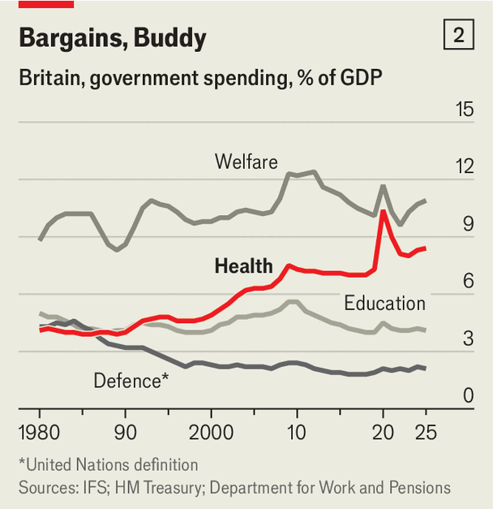
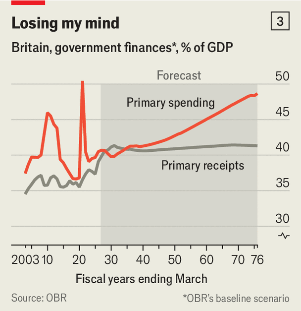
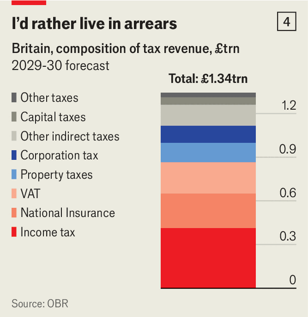

Britain
As his upcoming budget will show, the chancellor is out of his depth
Britain’s welfare state is living on borrowed time
But John Healey’s budget will feed the delusion that it is not




As his upcoming budget will show, the chancellor is out of his depth
Britain’s least-loved hotel chain is finally splashing the cash
As his upcoming budget will show, the chancellor is out of his depth
Britain’s elite may soon become harder to spot
As his upcoming budget will show, the chancellor is out of his depth
Mockery keeps Britain’s politicians honest. (Almost)
As his upcoming budget will show, the chancellor is out of his depth
How to help your child trounce the robots
Junior workers need to act like senior executives